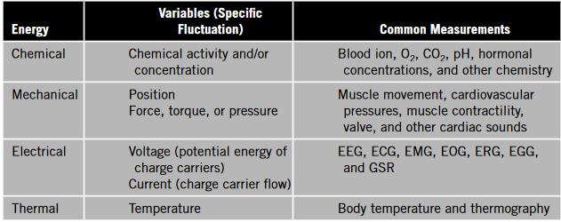
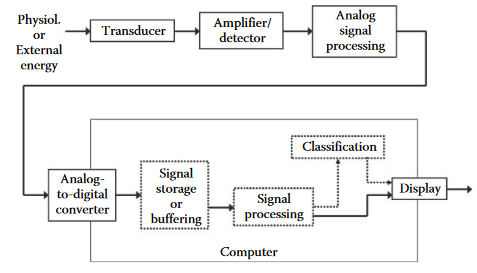

Sistemas y Señales Biomédicos
Ingeniería Biomédica
Sistemas y Señales Biomedicos - SYSB
Introduction
- Bio - That came from a biological being
- Signal - A signal is a function that conveys information about a physical phenomenon.
- Biosignals - The search for information from living systems to know its health state

Introduction
The codification of biosignals into variations: * Electrical * Mechanical * Chemical * Thermal
Introduction

Introduction
Introduction

Time line
Biomedical Signals:
1791: Luigi Galvani discovers electrical signals in living tissues (frog legs)
1830s: Carlo Matteucci studies electrical signals in the heart
1887: Willem Einthoven invents the first electrocardiograph (ECG)
1900s: James Mackenzie develops the first clinical ECG machine
Time line
Biomedical Signals:
1920s: Electroencephalography (EEG) is developed by Hans Berger
1930s: Electromyography (EMG) is developed by John Humphrey and others
1940s: Development of the first commercial ECG machines
1950s: Signal processing techniques are applied to biomedical signals
Time line
Biomedical Signals:
1960s: Digital signal processing and computer analysis of biomedical signals emerge
1970s: Biomedical signal processing becomes a recognized field
1980s: Development of Holter monitoring (24-hour ECG)
1990s: Advances in signal processing and machine learning applied to biomedical signals
Time line
Biomedical Signals:
2000s: Development of wearable devices and mobile health (mHealth) technologies
2010s: Emergence of big data analytics and cloud computing in biomedical signal processing
2020s: Integration of artificial intelligence (AI) and machine learning (ML) in biomedical signal processing
Time line
Biomedical Images:
1895: Wilhelm Roentgen discovers X-rays, leading to medical imaging
1900s: X-ray technology improves with development of modern X-ray tubes
1913: Albert Salomon develops mammography
1920s: Ultrasound technology is developed by Karl Dussik and others
Time line
Biomedical Images:
1930s: Nuclear medicine emerges with development of radioactive tracers
1950s: Computed Tomography (CT) scans are developed by Godfrey Hounsfield and Allan McLeod Cormack
1960s: Development of medical ultrasound imaging
1970s: Magnetic Resonance Imaging (MRI) is developed by Richard Ernst and others
Time line
Biomedical Images:
1980s: Digital image processing and analysis techniques are applied to biomedical images
1990s: Advances in MRI and CT scan technology, including 3D imaging
2000s: Development of functional MRI (fMRI), diffusion tensor imaging (DTI), and other advanced MRI techniques
2010s: Emergence of artificial intelligence (AI) and machine learning in medical imaging
Time line
Additional Milestones:
- 1950s: Development of medical electronics and instrumentation
- 1960s: First medical imaging computers are developed
- 1970s: Development of digital image processing and analysis software
- 1980s: Emergence of medical imaging informatics and PACS (Picture Archiving and Communication Systems)
- 1990s: Development of telemedicine and teleradiology
- 2000s: Emergence of electronic health records (EHRs) and health information exchanges (HIEs)
- 2010s: Development of personalized medicine and precision health initiatives